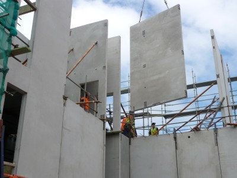
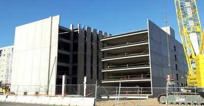
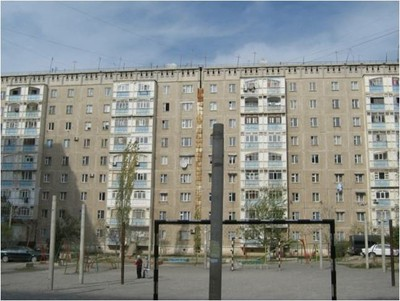
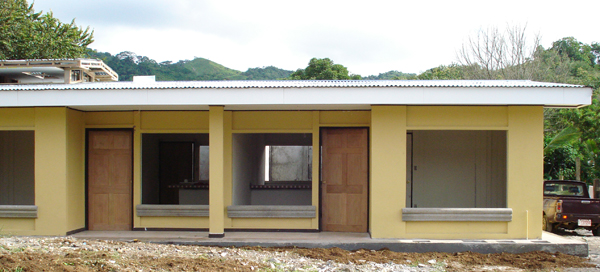
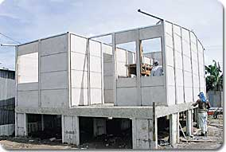
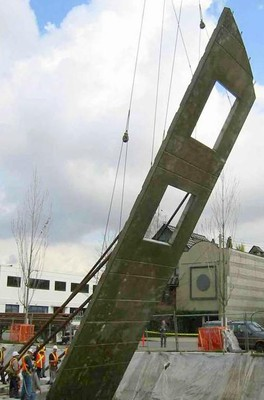
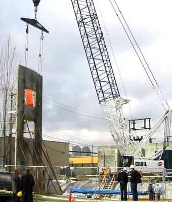
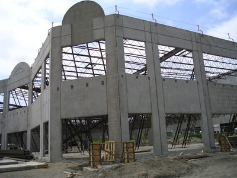
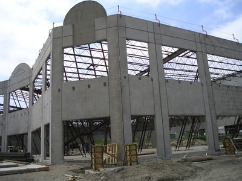

Precast concrete [PC]
Prefabricated concrete structural elements that are moved into their final position in the structure after they have been cast. They can be tied together by protruding reinforcing bars and in-situ concrete at connections or by on-site welding of cast-in steel connections between elements. Connections to floor slabs are often made by reinforcing bars lapping with reinforcement in floor slab concrete topping. Typical precast elements, such as wall panels, beams and columns are manufactured off site, but they can also be cast on site before being erected, like tilt-up panels.

Erection of precast concrete wall panels, New Zealand (A. Charleson)



Precast concrete wall construction, Nepal (K. Porter)

Large panel precast concrete construction, Kyrgyzstan (K. Kanbolotov)


Precast concrete construction technology comprising horizontal wall panels and vertical posts and is used for one-storey housing, Costa Rica (A. Cuevas Ramirez)


Tilt-up wall panels are precast in horizontal position at the construction site and lifted to the final vertical position (Canada, T. Abbuhl)
 

Tilt-up wall construction, Canada (S. Brzev)